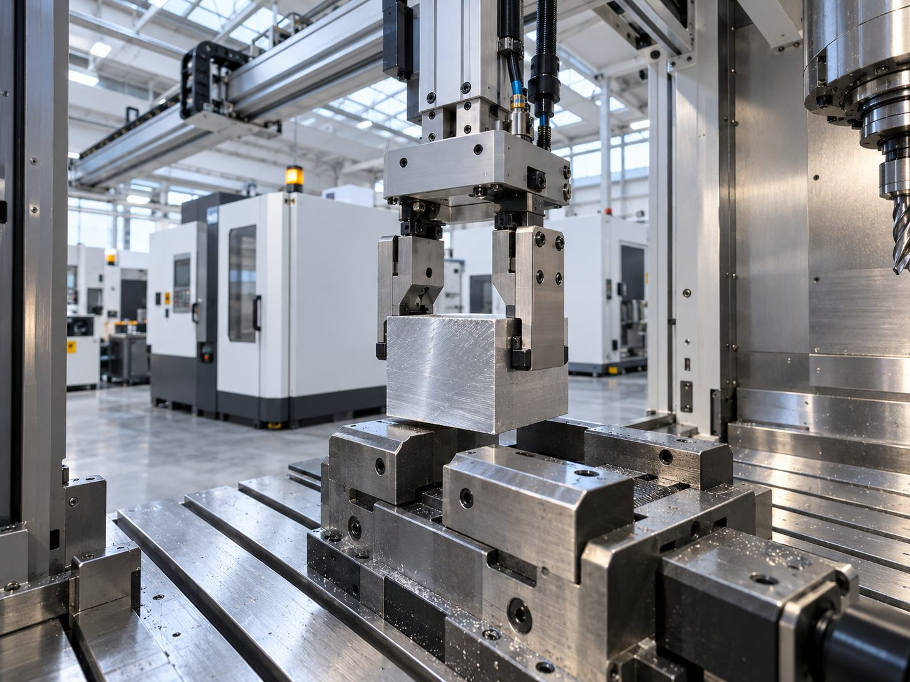
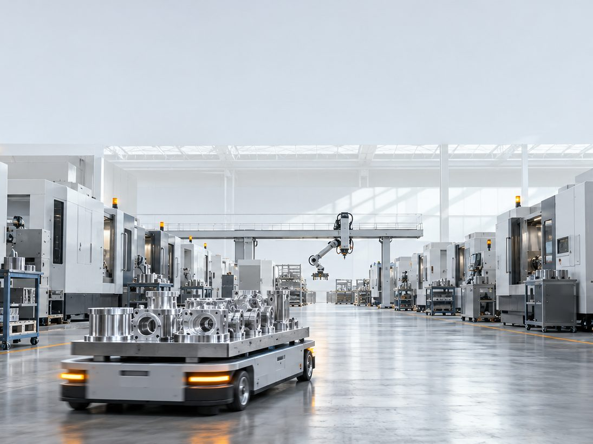
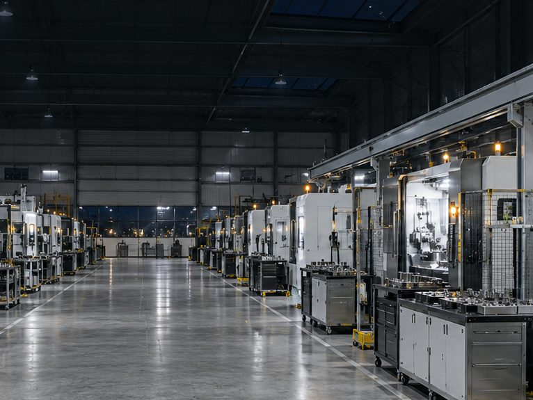
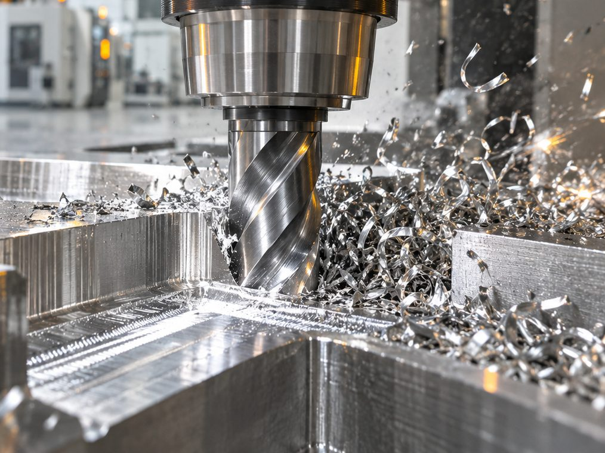
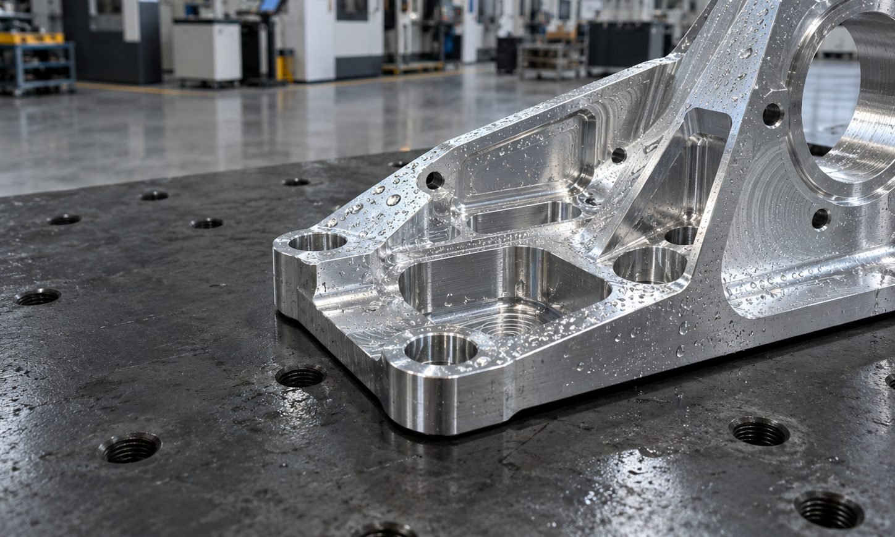

Antropi builds autonomous CNC factories. A gantry arm loads every machine on its rail, carts move the stock, and aerospace-grade parts come off day and night.
Illustrative image of an autonomous machining hall.
Antropi's stated figures
95%
Machine utilization
19 hours in every 20
24/7
Continuous operation
Every hour of the day
90%
Less labor required
One in ten labor hours left
10×
Faster
Ten where there was one
Figures as stated by Antropi Robotics on antropi.world. This concept page doesn't add any of its own.
A spindle only earns while it cuts. Everything else on the floor should keep it cutting.
A machine waits four ways: for someone to load it, for material, for a plan and for a repair. Antropi puts one system on each wait.
01 · Loading
One arm on a rail. Every machine beneath it.

Raw block, found by vision
A single robotic arm, mounted on an overhead gantry, serves several CNC machines. It picks raw stock, places it in the vise and takes the finished part out, using built-in foundational AI vision models. Nobody writes a pick program by hand.
Mount
Overhead gantry
Serves
Multiple CNC machines
Programming
None by hand: built-in vision models
02 · Material
Stock arrives before the machine asks.

Finished parts, outbound
Autonomous vehicles carry raw material to the machines and finished parts away from them, so no machine stands idle waiting for a pallet or a person with a cart.
Carries
Raw material in, finished parts out
Job
Machines never wait for stock
03 · Planning
The schedule writes itself, and says where it will jam.

Tonight's queueExample
BracketMachine ACutting
HousingMachine BNext
ManifoldMachine CBottleneck predicted
Operator task
Swap the fixture plate on machine C before the manifold starts.
Assigned · day operator
Software schedules the tasks, assigns and tracks work for operators, and predicts production bottlenecks before they hold up a part.
Schedules
Every task on the floor
Operators
Work assigned and tracked
Ahead of time
Bottlenecks predicted
04 · Upkeep
Maintenance before the failure, not after it.

Machine A · healthExample
VibrationNormal
TemperatureNormal
Bearing wearTrending up
Maintenance booked before failure
IoT sensors watch the health of each machine and schedule maintenance before something fails, so a stopped spindle is planned, not a surprise at three in the morning.
Watches
Machine health, continuously
Books
Maintenance before failure

Nonstop. Not unattended.
Day and night
The factory is built for nonstop manufacturing of aerospace-grade components. The parts keep coming off after the lights in the office go out.
A person in the loop
Safety is human-in-the-loop. When something rare happens that the system shouldn't decide alone, a person steps in through remote oversight.
Why Antropi
Count the hours your machines cut.
A week has 168 hours. Antropi states 95% machine utilization. Put in your own number and compare, one lamp per hour.
Your week40 hAt Antropi's stated 95%≈ 160 h
Arithmetic on Antropi's published utilization figure: 95% of 168 hours is about 160. It isn't a quote or a promise.
Keep every spindle cutting.
Tell us what you machine and how many machines you run. We'll show you the cell, the arm and the schedule on your kind of part.